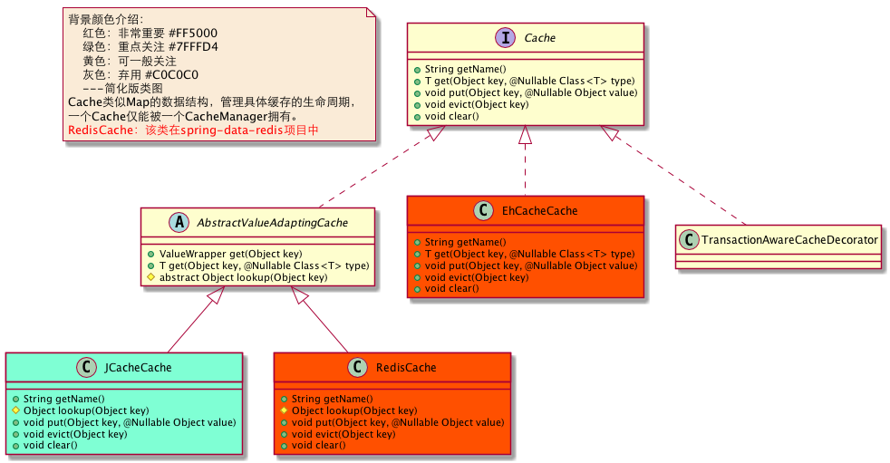
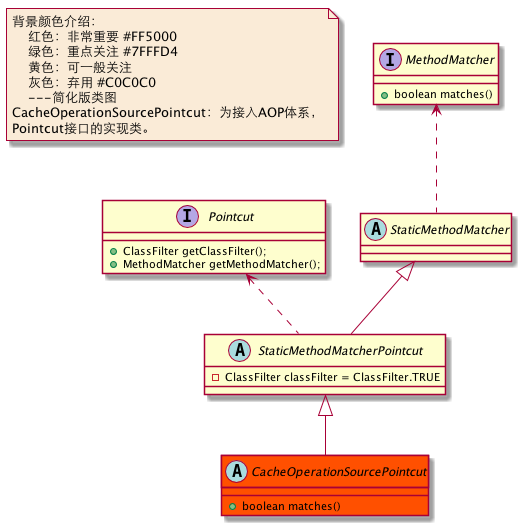
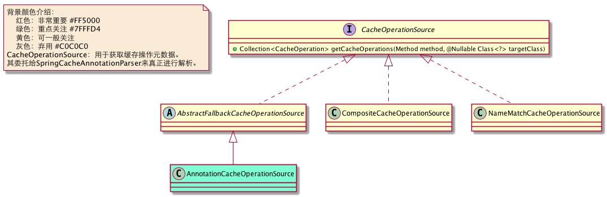

Spring缓存基础设施介绍
Spring缓存的架构和事务的差不多，基本上是一个套路。我们看看有哪些组件。
一.核心组件
1. CacheOperation
CacheOperation：表示缓存操作元数据。具体子类代表不同缓存操作，可以理解为注解的内存表示。
{kind=link}
2. Cache
Cache是一个类似Map的数据结构，管理具体缓存的生命周期，仅可以被一个CacheManager拥有。
{kind=link}

3. CacheManager
CacheManager：用于管理Cache的生命周期。
{kind=link}
二. AOP套件
1. CacheOperationSourcePointcut
CacheOperationSourcePointcut：为接入AOP体系，Ponitcut接口的实现类。同事务一样，这里具体实现也是匿名内部类的方式(BeanFactoryCacheOperationSourceAdvisor中)。
{kind=link}

2. CacheInterceptor
CacheInterceptor：为接入AOP体系，Advice接口的实现类，CacheInterceptor属于环绕通知。
{kind=link}

2. BeanFactoryCacheOperationSourceAdvisor
BeanFactoryCacheOperationSourceAdvisor：为接入AOP体系，Advisor接口的实现类。
{kind=link}
三. 其他组件支持
1. CacheOperationSource
CacheOperationSource：用于获取缓存操作元数据。其委托给SpringCacheAnnotationParser来真正进行解析。
{kind=link}

2. CacheAnnotationParer
CacheAnnotationParer：把注解解析为CacheOperation。
{kind=link}
3. CacheResolver
CacheResolver：获取当前方法要用到的Cache实例。
{kind=link}
4. ValueWrapper
ValueWrapper：包装从缓存中获取的值。
{kind=link}
和事务很像吧，有了以上诸多组件的支持，再加上Spring AOP基础设施的支持，Spring实现了整个缓存的管理。那我们一探究竟到底怎么回事：Spring缓存管理原理。
快速导航：